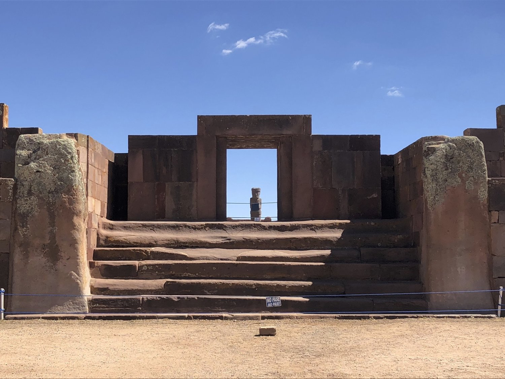
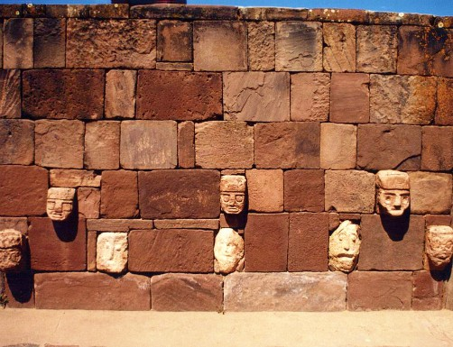
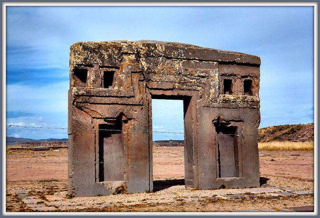
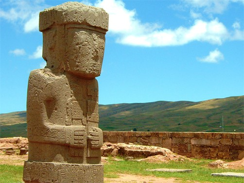
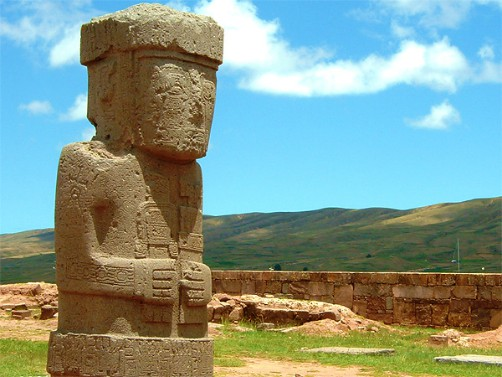
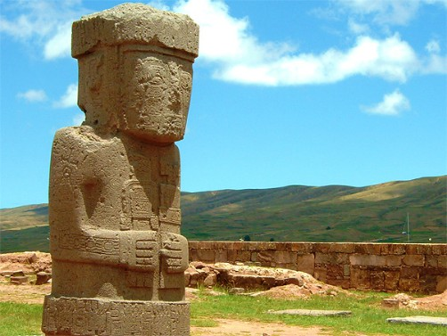

 



Las ruinas de Tiwanaku o Tiahuanaco son las más importantes y mejor conservadas de todo Bolivia. A pesar de ello, hoy en día apenas quedan en pie restos de la que fue la mayor y más antigua cultura de América, el pueblo Tiahuanacota, que se extendió durante 25 siglos por lo que hoy es Bolivia, el norte de Argentina y Chile hasta el desierto de Atacama. Su capital era la ciudad de Tiahuanaco y está situada a 70 kilómetros de La Paz y a 3800 metros de altitud.
SOLICITAR